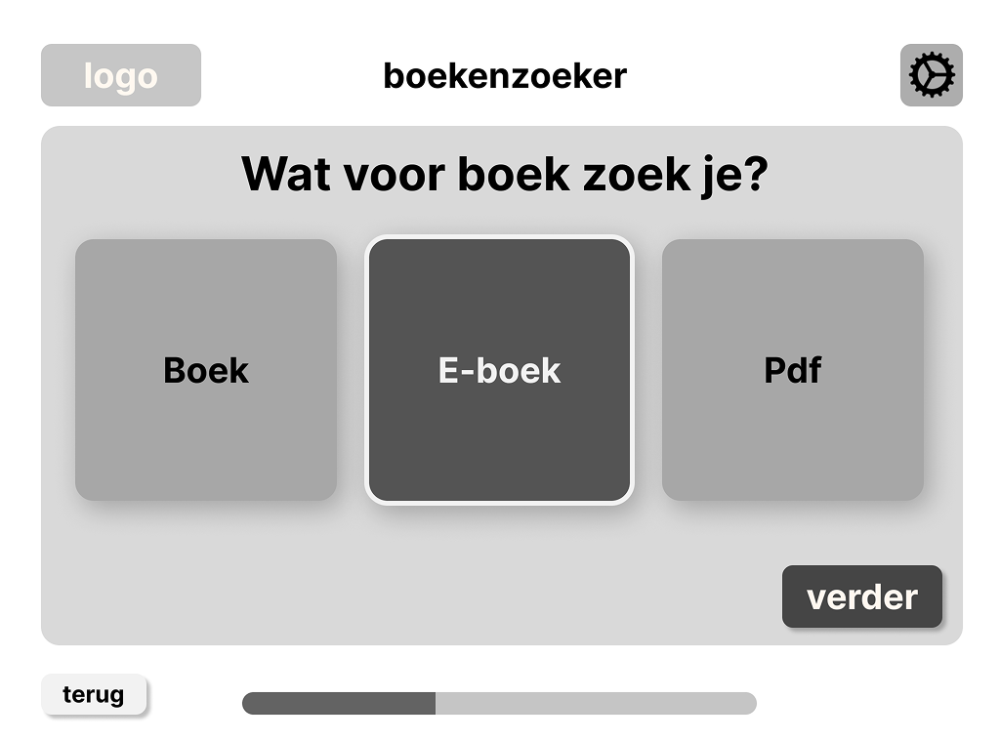
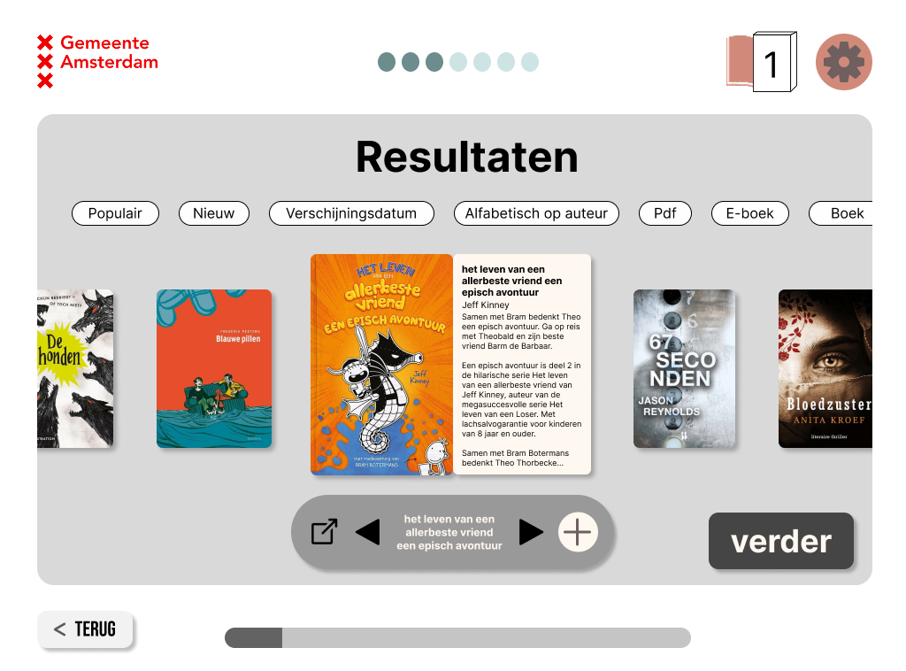
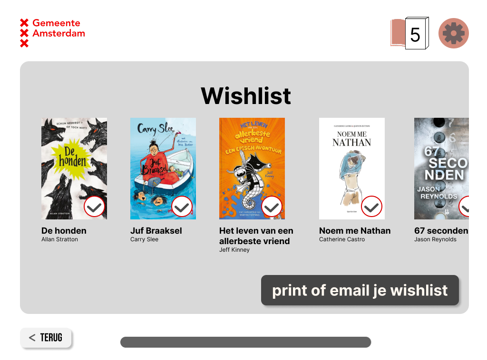
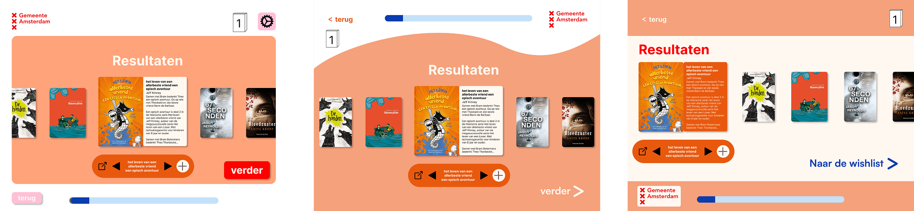

I started with making the lo-fi prototype in Figma. This way i had an overview of all the screens while not having to focus too much on all the details.
choice screen

During this process we had to focus on the one primary action to make ensure users could follow the right flow. So for the choice screens i framed the primary action while keeping the secondary actions outside of the frame but still have a structured overview.
results

For the results i tried to give the users an overview of the books that are recommended for them without overwhelming them but too many options, but the description was too small and it was a little confusing.
wishlist

This is the wishlist. It's very simple but i think its more effective that way.
hi-fi variations

Part of the assignment was that we also start with a few hi-fi variations. And see which layout works best, but i ended up with a totally different design.